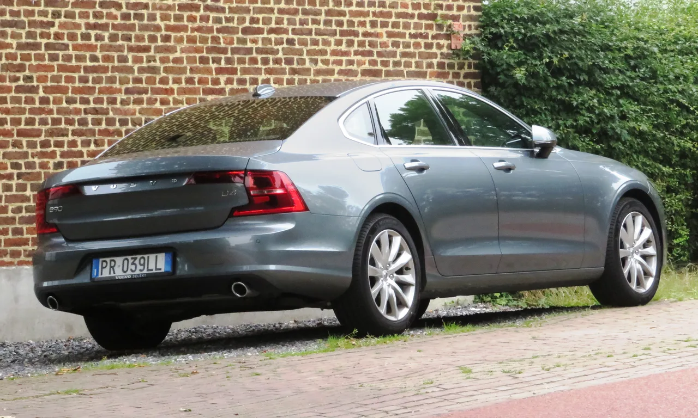

▲ 볼보 S90. 볼보의 플래그십 세단이지만 중고 시장에서는 초기형 기준 최대 78%에 달하는 감가율을 기록한 매물도 나오고 있다
볼보의 최상위 세단 S90이 중고차 시장에서 예상 밖의 가혹한 감가를 겪고 있는 것으로 나타났습니다. 엔카 등록 매물을 분석한 결과, 초기형(2016~2020년식) S90 중 감가가 가장 심한 개체는 신차가 대비 최대 78%까지 떨어진 것으로 조사됐습니다. 다시 말해 신차가의 22% 수준까지 주저앉은 셈입니다. 다만 연식과 트림에 따라 편차가 상당히 커서, 일괄적으로 "75~78% 감가"라고 단정하기보다는 사례별로 뜯어볼 필요가 있습니다.
1. 왜 하필 플래그십이 더 가혹한가
일반적으로 중고차 시장에서는 세그먼트가 높아질수록, 즉 차량 가격이 비쌀수록 감가율이 커지는 경향이 있습니다. 신차 가격 자체가 높다 보니 초기 감가폭이 금액 기준으로 크게 느껴지고, 중고 구매층 역시 신차 대비 훨씬 저렴한 가격을 기대하기 때문입니다. S90은 볼보 라인업에서 가장 비싼 세단이면서도 브랜드 인지도나 중고 수요 측면에서는 벤츠 S클래스, BMW 7시리즈 같은 전통의 독일 플래그십에 밀리는 경우가 많아 이런 경향이 더욱 두드러집니다.

▲ 볼보 S90 실내. 고급스러운 스칸디나비아 감성의 인테리어를 갖췄지만, 중고 시장에서는 브랜드 프리미엄 격차가 감가에 영향을 미친다
2. 브랜드 프리미엄 격차의 벽
볼보는 안전성과 실용성으로 강한 브랜드 이미지를 구축했지만, 럭셔리 플래그십 세단 시장에서는 여전히 독일 3사(벤츠·BMW·아우디)에 비해 프리미엄 포지셔닝이 약한 편입니다. 신차 구매 시에는 볼보 특유의 디자인과 안전 기술에 끌려 선택하는 소비자가 많지만, 중고차 구매 단계에서는 브랜드 위상에 따른 가격 방어력 차이가 뚜렷하게 드러납니다. 특히 플래그십 세단 세그먼트는 브랜드 상징성이 잔존가치에 미치는 영향이 큰 시장이라, 이 격차가 감가율로 고스란히 반영되는 것으로 분석됩니다.
| 연식/트림 | 신차가→중고가 | 잔존가치 |
|---|---|---|
| 2018 D5 AWD 인스크립션 | 7,490만→1,650만원 | 22%(감가 78%) |
| 2019 T5 인스크립션 | 6,590만→1,799만원 | 27%(감가 73%) |
| 2020 B5 인스크립션 | 6,690만→2,920만원 | 44%(감가 56%) |

▲ 볼보 S90 후측면. 세단 시장 자체가 SUV 선호 흐름에 밀리면서 수요 감소가 감가율을 더 끌어올리는 요인으로 작용했다
3. 세단 수요 감소라는 구조적 악재
플래그십 세단 시장 전반이 겪고 있는 구조적 수요 감소도 S90의 감가율을 끌어올리는 배경입니다. 최근 몇 년간 프리미엄 세그먼트에서도 SUV 선호 현상이 뚜렷해지면서, 대형 세단에 대한 신규 수요 자체가 줄어드는 추세입니다. 볼보 역시 XC90, XC60 등 SUV 라인업이 판매를 주도하고 있고, S90은 상대적으로 판매 비중이 낮은 모델입니다. 이런 수요 구조에서는 중고차 매물이 시장에 나와도 매수 대기 수요가 두텁지 않아 가격 방어가 더 어려워집니다.

▲ 딜러 전시장의 볼보 S90. 낮은 잔존가치는 역설적으로 실사용 목적의 중고 구매자에게는 매력적인 가격 조건이 되기도 한다
4. 정리 — 팔 때는 손해, 살 때는 기회
최대 78%에 달하는 감가율은 신차로 구입해 되팔 계획이 있는 소비자에게는 분명한 리스크입니다. 다만 2020년식 B5처럼 비교적 최근 연식·주행거리가 짧은 개체는 잔존가치 44%를 유지하는 등, 연식과 관리 상태에 따라 감가폭 차이가 상당히 크다는 점도 함께 봐야 합니다. 관점을 바꾸면, 실사용을 목적으로 중고 S90을 구매하려는 소비자에게는 초기형일수록 오히려 매력적인 가격 조건이 될 수 있습니다. 스칸디나비아 감성의 인테리어와 볼보 특유의 안전 사양을 신차가의 4분의 1 수준에 누릴 수 있다는 뜻이기 때문입니다. 다만 신차 구매를 고려 중이라면, 리스나 장기 렌트 등 감가 리스크를 줄일 수 있는 구매 방식을 함께 검토해볼 필요가 있습니다.